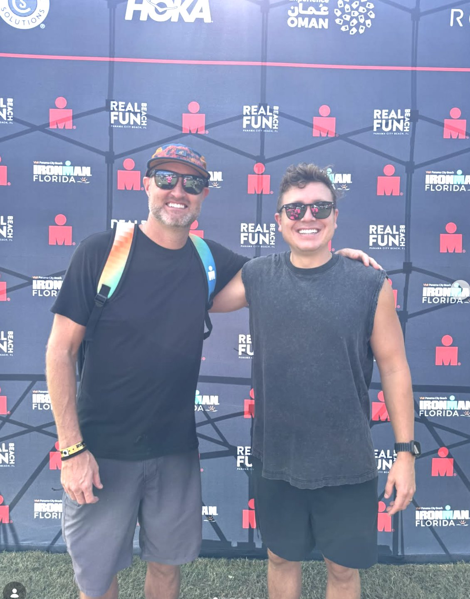

My First Ironman: 16.5 Hours at IRONMAN Florida
Pete Ryan finished his first Ironman at IRONMAN Florida in about 16.5 hours. Six months earlier he could barely run a mile. Here's what he learned.
On Saturday, November 7, 2026, I finished my first Ironman at IRONMAN Florida in Panama City Beach.
After a 2.4-mile ocean swim, a 112-mile bike, and a 26.2-mile run, 10,000 calories burned, a messed-up back, and a ton of blisters, we got it done. It took about 16.5 hours.
My first Ironman. Before this, I'd only ever done a half marathon. Six months earlier, I could barely run a mile, and I was 30 pounds heavier. Then we finished the whole thing.

Six months with Andy
I owe it all to my good friend Andy Mewborn.
We started working out together six months ago. We'd get up every day at 5 a.m., sometimes 4 a.m., to run, bike, or swim. That was the routine: early, often, and together. Day after day, we just kept showing up.
Once I got into the swing of it, I actually started to enjoy it. The early mornings, the training, the whole thing.
The best part is we never took it too seriously. Lots of jokes. That was true from those first 4 a.m. sessions all the way through race day in Panama City Beach.
During the race, while everyone else was counting carbs, riding $20k bikes, and wearing those ridiculous cone helmets, we were making fun of them in fake southern accents. I mean, we were in the Redneck Riviera.
The swim
The swim was my quickest leg, about an hour and a half. Of the three parts of the day, this was the one that went by fastest.
It was also where most people dropped out.
Those two things can both be true. It's a 2.4-mile ocean swim, and it is a real challenge. Ocean currents. Getting kicked. Feeling claustrophobic in the dark water. That's a hard way to start a very long day, and it's where a lot of people left the race. I got through it in about an hour and a half, and then it was on to the bike.
I did skip one thing I shouldn't have. I didn't put Chafe Butter on my neck for the swim, and that caused neck chafing. I felt it long after I got out of the water.
The bike
The swim and the bike went well, honestly. The bike is 112 miles, and for me this was the part of the day that held together.
Next time, I think I'll use aero bars on the bike. I didn't have them for this race. I want them for the next one.
The run
The run is where it got hard.
The marathon is 26.2 miles. At mile 13 of 26, I bonked. My back started spasming every 50 feet or so. I'd heard the word "bonk" for years, and that day I finally learned what it means.
There was still half a marathon to go.
My feet were a mess too. I normally wear cotton socks when I run. This time I wore wool, and that was a mistake. It cost me toenails and left blisters all over my feet.
So that's how I closed it out: a messed-up back, a ton of blisters, and 13 miles still to go when the back went. We got it done anyway.
Gear I'd change next time
A few things I'd do differently:
- Use aero bars on the bike. I didn't have them this time, and I want them next time.
- Stick with cotton socks. I usually run in cotton, and the wool ones cost me toenails and left blisters all over my feet.
- Put Chafe Butter on my neck before the swim. I'm not skipping that again.
Small things. They added up. I'll fix them on the next one.
What made this race extra special
A week earlier, Andy lost a close friend, Adam Robinson, in the Learjet crash. We did this one for him and his family.
What I learned
Biggest learnings:
Discipline = freedom.
Smile, or you're not doing it right.
Just like in life — keep going.
I felt all three of those out there. The early mornings for six months. The jokes in the middle of a serious race. And mile 13 to mile 26, when my back was spasming every 50 feet. You keep going.
What's next
Now the next challenge: doing this every year, until I can't.
I work on Growth at Supabase. I'm a two-time VC-backed founder (HiFive, acquired by HeyLois; Gogohire), I led enterprise sales at Trello, and I started LinkedIn Sales Solutions. More at heypeteryan.com.